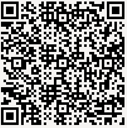

This repository proposes a unified and consistent javascript events API that could be leveraged in Dojo 2.0. This API aims to abstract touch/pointer/mouse events across devices/OS. It is based on the Pointer Events specification and adds features that are out of scope of the current specification, such as click/tap and double click/double tap support.
Scan this code to access this page from a mobile device.
This is a work in progress. No official release.
This tools tracks and displays dojo pointer, mouse, touch, and MS Pointer events in many situations. You can enable/disable touch events prevent defaults, enable/disable dojo pointers API, chose which events you want to display. The log displays 50 entries max.
A simple paint application to demonstrate multi touch handling of Dojo Pointers. Simply change the device orientation to reset the canvas. Number of active touch point depends on hardware capabilities and system option. To use more than 3 touch points on iOS, disable Mutitasking Gestures in Settings > General